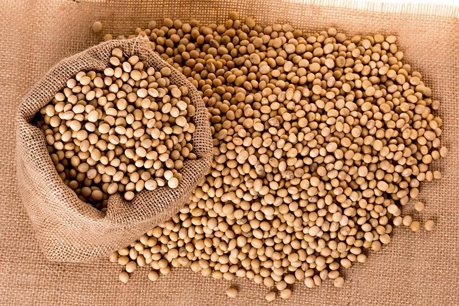

Soybeans (Glycine max) are one of the most important and versatile legumes in the world. They come in several types, each with different uses in food, agriculture, and industry. Here are the main types of soybeans:
- Edamame, Young, green soybeans. Eaten as a snack or appetizer.
- Yellow Soybeans, Used for making tofu, soy milk, and other soy products.
- Black Soybeans, Used in Chinese cuisine and fermented soy products.
- Green Soybeans, Used for making soybean oil and animal feed.
